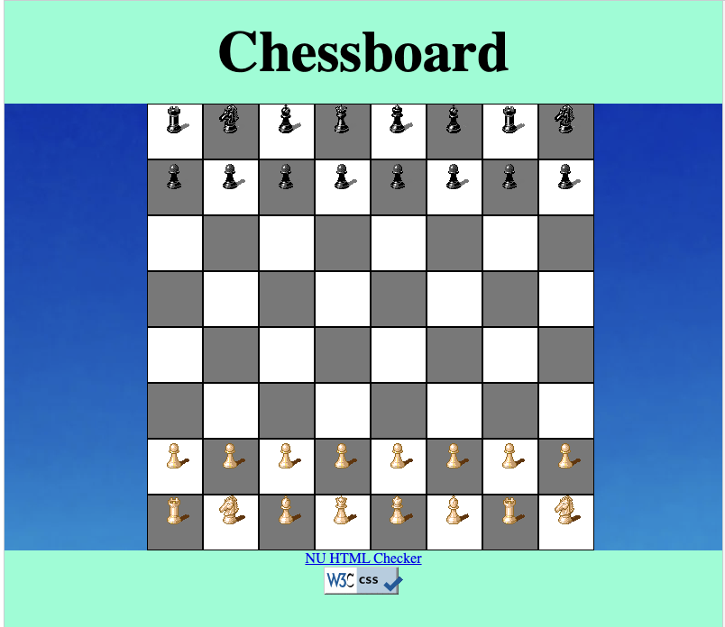
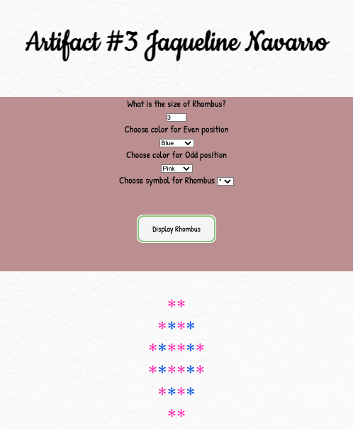
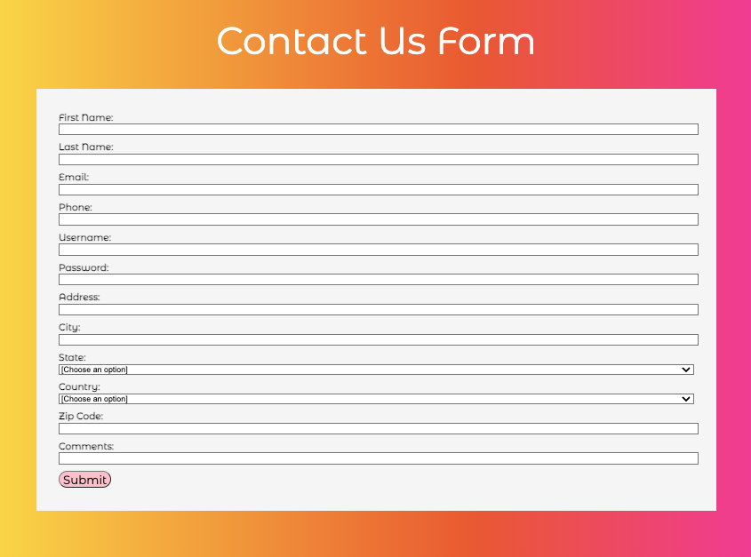
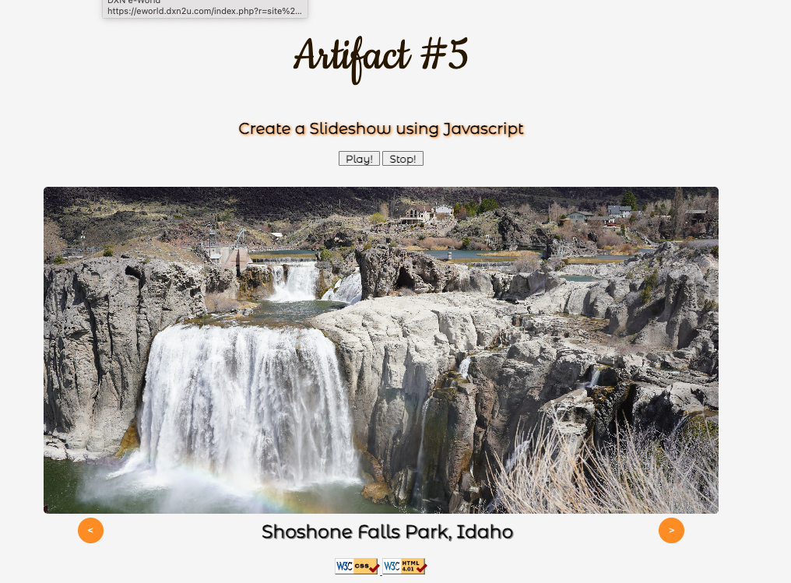

Artifacts


Artifact #1
The CV artifcat was created just by using the standard HTML tags only.
Artifact #2
The Chessboard artifact was the introduction to CSS especially the use of divs.This first project was created using a combination of HTML and CSS.

Artifact #3
The rhombus artifact was a little introduction to Javascript, in this one you can find a combination of HTML, CSS and JavaScript.

Artifact #4
The validation form artifact have a lot of javaScript. It was necesary to create several functions to validate the information. Of course it has also HTML and a little of CSS.

Artifact #5
This artifact is a slide show made. In this slide show you will find 5 pictures, the buttons and the interval were create using JavaScript, of course HTML and CSS too.
